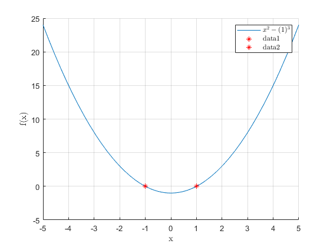

Contents
% Umer Islam % FA18-BPH-092 %CMPLAB Assignment#2
Question#1
1. Write a MATLAB program which calculates the root of the equation c in the interval [0.5, 2], using False position method. Make sure to account for every possibility. Plot the given function and the calculated root.
clc,clearvars,close all; whos % define function f = @(x) x^3-2*sin(x); % matlab takes the sin(x) values in degree by default %define interval, changing the interval will find other roots a = -5; b = -1; %tolerance e = 0.00001; % no. of itterations n = 30; %condition if f(a)*f(b)<0 && a<b for i = i :n c = ( ( a*f(b)-b*f(a) ) /(f(b)*f(a))); fprintf(' root value for %d itteration = %.5f \n',i,c) if abs(f(c)<e) break end if f(a)*f(c)<0 b = c; else a = c; end end else disp("No root lies in the interval") end hold on fplot(f,[-20,20]) legend(Interpreter="latex") grid on plot(c,0,'or') hold off
Warning: Colon operands must be real scalars. root value for 0 itteration = 1.50365 root value for 1 itteration = -1.03143 root value for 2 itteration = 1.70626 root value for 3 itteration = -0.53207 root value for 4 itteration = 0.65521 Warning: Function behaves unexpectedly on array inputs. To improve performance, properly vectorize your function to return an output with the same size and shape as the input arguments.
Question#2
2. Write a MATLAB program which calculates the root of the function f (x) = x^3−4x−9, using Secant method. Make sure to account for every possibility. Plot the given function and the calculated root.
clearvars;clc;who;close all; % define the function f = @(x) x^3-4*x-9; %intial points x_0 = -5; x_1 = 5; e = 10^-4; %tolerance, to stop the loop n = 10; %condition for i = 1:n x_2 = (x_0*f(x_1)-x_1*f(x_0))/(f(x_1)-f(x_0)) x_0 = x_1; x_1= x_2; end %plot the function and its root hold on fplot(f) legend(Interpreter="latex") xlabel("x") ylabel("f(x)") plot(x_2,0,"*r") grid on hold off
x_2 =
0.4286
x_2 =
0.8845
x_2 =
-3.5775
x_2 =
2.7307
x_2 =
2.6629
x_2 =
2.7060
x_2 =
2.7065
x_2 =
2.7065
x_2 =
2.7065
x_2 =
2.7065
Warning: Function behaves unexpectedly on array inputs. To improve performance,
properly vectorize your function to return an output with the same size and
shape as the input arguments.
Question#3
3. Write a MATLAB program which calculates the root of the equation x4 − x2 = 1, using the (fixed-point) Iteration method. Make sure to account for every possibility. Plot the given function and the calculated root.
clearvars;clc;who,close all; %define the function % x^4 -x^2 - 1 = 0; rearrange as x = sqrt(x^2-1) f = @(x) sqrt(x^4-1) ; % looking at graph tells us that we have 2 roots % f = @(x) (2^x+2)/5; % for testing the function x0 = -2; % Initial guess tol = 10^-10; flag = true; its = 0; while flag == true && its<100 x = f(x0); if abs(x-x0)<tol flag = false; end x0 = x; its = its+1; end disp([x, x^4-x^2-1, its]) hold on fplot(f) plot(x,0,'or') hold off
Inf NaN 100 Warning: Function behaves unexpectedly on array inputs. To improve performance, properly vectorize your function to return an output with the same size and shape as the input arguments.
Question#4
Write a MATLAB program which calculates the root of the function f (x, y) = x2 −y3 using MATLAB’s fsolve function.
clearvars;clc;who,close all; warning("fzero 'Single-variable' nonlinear zero finding") warning("we must fix one variable by giving it a scalar value") fprintf('lets put y =1, this will give us 2 roots') f = @(x) x.^2-(1).^3; x0= -10; x1 =10; r = fzero(f,x0) r1 = fzero(f,x1) hold on fplot(f) xlabel("x",interpreter = "latex") ylabel("f(x)",interpreter = "latex") legend(Interpreter="latex") box off plot(r,0,'*r') plot(r1,0,'*r') grid on hold off
Warning: fzero 'Single-variable' nonlinear zero finding
Warning: we must fix one variable by giving it a scalar value
lets put y =1, this will give us 2 roots
r =
-1.0000
r1 =
1.0000
 Question#5
Write a MATLAB program which calculates the roots of the polynomial x3 = 2 − x. Plot the given polynomial and the calculated roots.
clc,clearvars,whos, close all % define the function f = @(x) x^3+x-2; % define the interval a = -10; b = 20; % a = input('select left side of the interval'); % b = input('select rigth side of the interval'); % define the itterations n = 29; e = 0.00001; % write conditions if f(a)*f(b)<0 for i = i :n c = ((a+b)/2); fprintf('root is : %.6f , no. of itteration: %d\n',c,i) if abs(a-c)<e || abs(b-c)<e break end if f(a)*f(c)<0 b =c; else a =c; end end else disp('No root lies in the interval') end %plot function and its root in the given interval hold on xlabel("x",Interpreter="latex",FontSize=15) ylabel("f(x)",Interpreter="latex",FontSize=15) legend('Interpreter','latex',FontSize=15) box off fplot(f,lineWidth=1.5) plot(c,0,'*r',LineWidth=2) grid on hold off
Warning: Colon operands must be real scalars. root is : 5.000000 , no. of itteration: 0 root is : -2.500000 , no. of itteration: 1 root is : 1.250000 , no. of itteration: 2 root is : -0.625000 , no. of itteration: 3 root is : 0.312500 , no. of itteration: 4 root is : 0.781250 , no. of itteration: 5 root is : 1.015625 , no. of itteration: 6 root is : 0.898438 , no. of itteration: 7 root is : 0.957031 , no. of itteration: 8 root is : 0.986328 , no. of itteration: 9 root is : 1.000977 , no. of itteration: 10 root is : 0.993652 , no. of itteration: 11 root is : 0.997314 , no. of itteration: 12 root is : 0.999146 , no. of itteration: 13 root is : 1.000061 , no. of itteration: 14 root is : 0.999603 , no. of itteration: 15 root is : 0.999832 , no. of itteration: 16 root is : 0.999947 , no. of itteration: 17 root is : 1.000004 , no. of itteration: 18 root is : 0.999975 , no. of itteration: 19 root is : 0.999990 , no. of itteration: 20 root is : 0.999997 , no. of itteration: 21 Warning: Function behaves unexpectedly on array inputs. To improve performance, properly vectorize your function to return an output with the same size and shape as the input arguments.